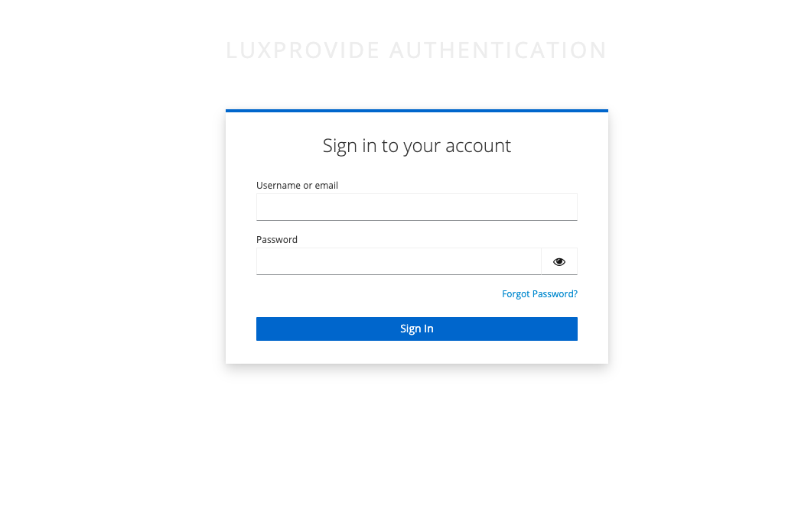
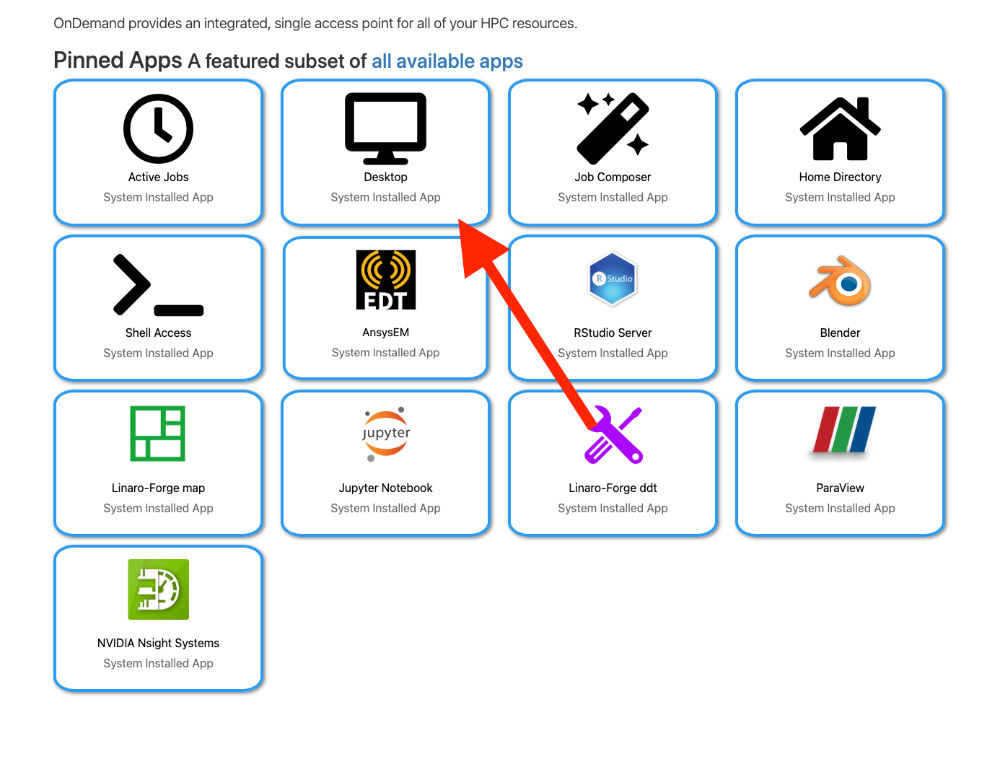
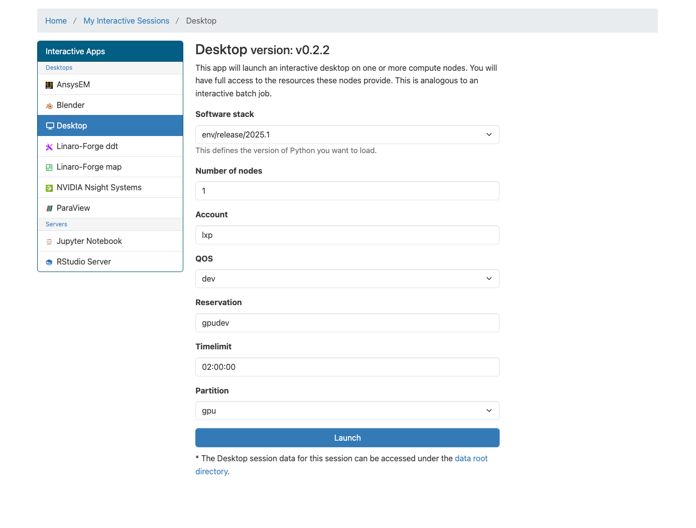
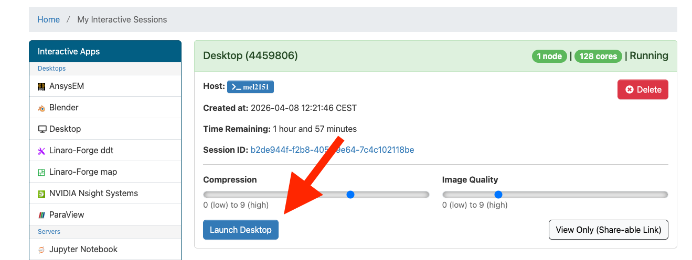
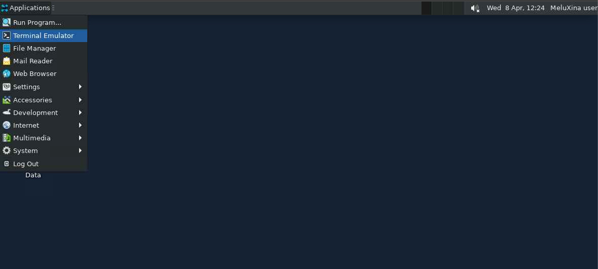

Setting things up¶
This short guide explains how to connect to MeluXina using OpenOnDemand, start a remote desktop session, open a terminal, and retrieve the tutorial code for the profiling exercises.
The goal of this setup is to provide you with an interactive GPU-enabled environment where you can run and profile applications with graphical and command-line tools.
OpenOnDemand¶
Open the OpenOnDemand portal¶
Open your web browser and navigate to the MeluXina OpenOnDemand portal:

Log in with your credentials.
After successful authentication, you will be redirected to the OpenOnDemand home page. From here, you can launch interactive applications such as terminals, notebooks, and full remote desktop sessions. For this tutorial, we will use the Desktop application, which provides a complete Linux desktop environment.
Opening the Desktop app¶
From the OpenOnDemand landing page, open the Interactive Apps menu and select the Desktop application.

This application allows you to start a graphical remote session on MeluXina, which is useful for running tools that require a desktop environment.
Choosing the appropriate job options¶
Configure the desktop job with the appropriate parameters for the tutorial. See also this session on how to use OOD

Recommended settings:
- 1 node
- Account:
p201259 - QOS:
default - Timelimit:
02:00:00 - Partition:
gpu
→ Do not forget to press the launch button
Once the job is submitted, OpenOnDemand will queue it and prepare your interactive environment.
Accessing the session¶
After the job starts, OpenOnDemand will show it under My Interactive Sessions. Click Launch Desktop to connect to your session.

This will open a browser-based desktop connected to the allocated MeluXina resources. No other software is required on your local machine !
Opening the terminal app¶
Inside the remote desktop session, open a terminal window.

The terminal will be used for all command-line operations in this tutorial, including navigating directories, cloning the repository, and running profiling commands.
Cloning the repo¶
Going to the project folder¶
In the next steps, we will prepare a workspace and download the tutorial material from LuxProvide GitHub.
In the terminal app you openned, create a personal working directory inside the shared project workspace and move into it.
Cloning¶
Next, clone the training repository containing the code:
git clone https://github.com/LuxProvide/Scynergy2026-GPUApplicationProfiling
cd Scynergy2026-GPUApplicationProfiling/
Next steps¶
After this step, you should have access to all files needed for the tutorial, including source code, examples, and profiling material.
You are now ready to continue with a quick demo of NVIDIA NSight-Systems.